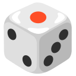

✕
Fechar
Início
Pré-Escolar
1º Ano
2º Ano
3º Ano
4º Ano
Voltar
Dados Mágicos
Conta os pontinhos e revela a imagem!

1
2
3
Escolhe o teu nível!
Fácil: Até 5
Médio: 6 a 10
0
Super: 0 a 10
Menu
Dica
SEGUINTE
Fantástico!
Fim do caminho mágico!
JOGAR OUTRA VEZ
VOLTAR AO MENU